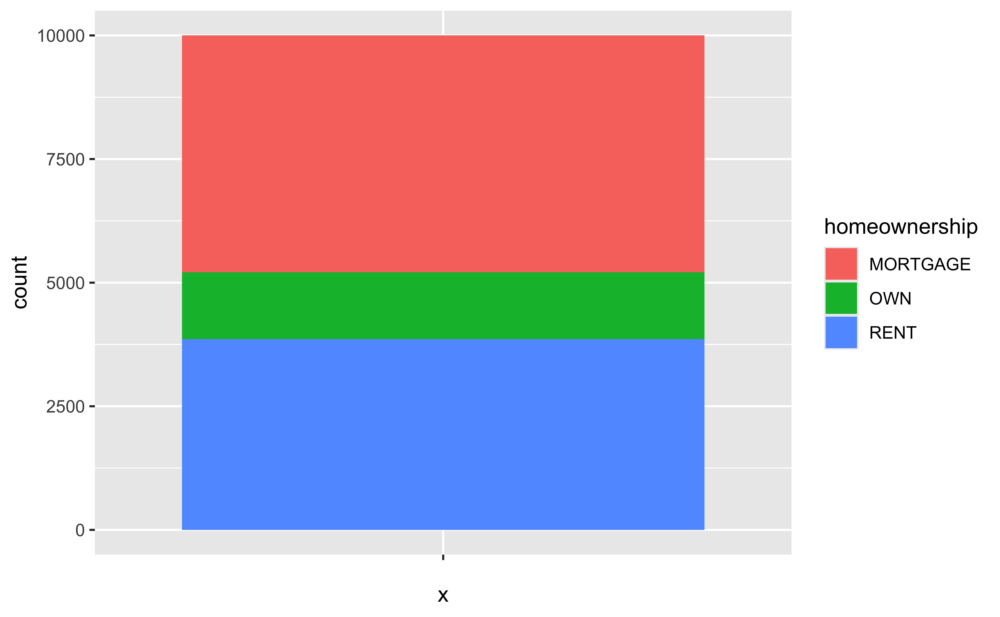
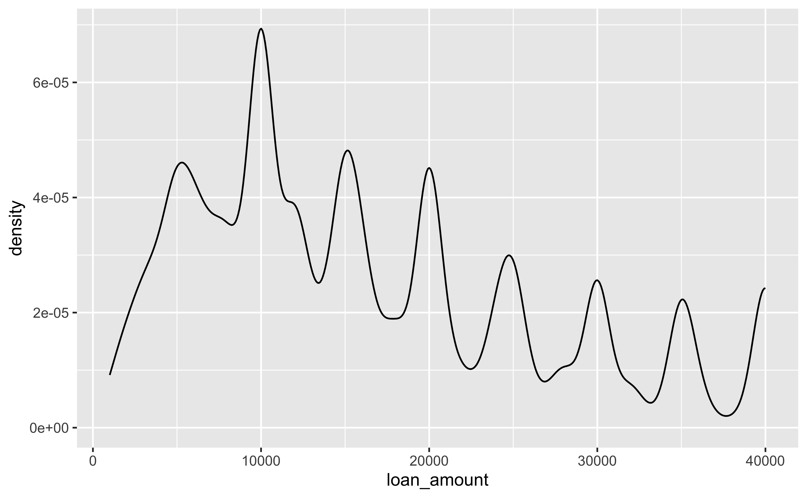
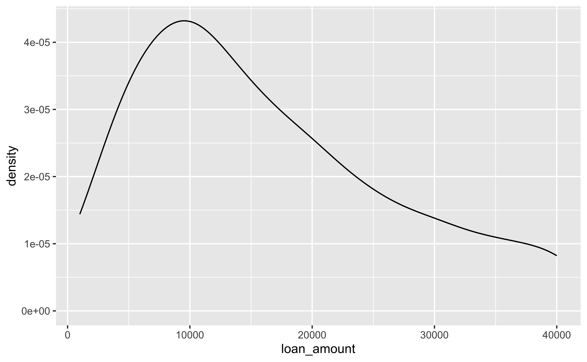
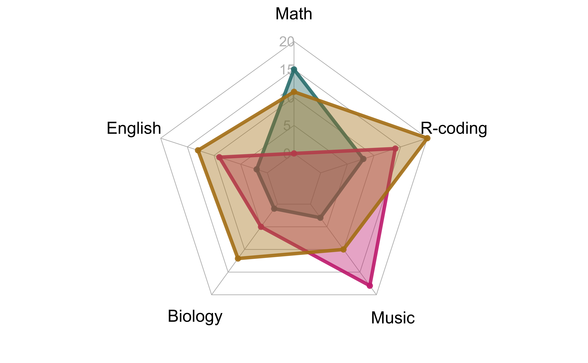

Rows: 10,000
Columns: 55
$ emp_title <chr> "global config engineer ", "warehouse…
$ emp_length <dbl> 3, 10, 3, 1, 10, NA, 10, 10, 10, 3, 1…
$ state <fct> NJ, HI, WI, PA, CA, KY, MI, AZ, NV, I…
$ homeownership <fct> MORTGAGE, RENT, RENT, RENT, RENT, OWN…
$ annual_income <dbl> 90000, 40000, 40000, 30000, 35000, 34…
$ verified_income <fct> Verified, Not Verified, Source Verifi…
$ debt_to_income <dbl> 18.01, 5.04, 21.15, 10.16, 57.96, 6.4…
$ annual_income_joint <dbl> NA, NA, NA, NA, 57000, NA, 155000, NA…
$ verification_income_joint <fct> , , , , Verified, , Not Verified, , ,…
$ debt_to_income_joint <dbl> NA, NA, NA, NA, 37.7, NA, 13.1, NA, N…
$ delinq_2y <int> 0, 0, 0, 0, 0, 1, 0, 1, 1, 0, 0, 0, 0…
$ months_since_last_delinq <int> 38, NA, 28, NA, NA, 3, NA, 19, 18, NA…
$ earliest_credit_line <dbl> 2001, 1996, 2006, 2007, 2008, 1990, 2…
$ inquiries_last_12m <int> 6, 1, 4, 0, 7, 6, 1, 1, 3, 0, 4, 4, 8…
$ total_credit_lines <int> 28, 30, 31, 4, 22, 32, 12, 30, 35, 9,…
$ open_credit_lines <int> 10, 14, 10, 4, 16, 12, 10, 15, 21, 6,…
$ total_credit_limit <int> 70795, 28800, 24193, 25400, 69839, 42…
$ total_credit_utilized <int> 38767, 4321, 16000, 4997, 52722, 3898…
$ num_collections_last_12m <int> 0, 0, 0, 0, 0, 0, 0, 0, 0, 0, 0, 0, 0…
$ num_historical_failed_to_pay <int> 0, 1, 0, 1, 0, 0, 0, 0, 0, 0, 1, 0, 0…
$ months_since_90d_late <int> 38, NA, 28, NA, NA, 60, NA, 71, 18, N…
$ current_accounts_delinq <int> 0, 0, 0, 0, 0, 0, 0, 0, 0, 0, 0, 0, 0…
$ total_collection_amount_ever <int> 1250, 0, 432, 0, 0, 0, 0, 0, 0, 0, 0,…
$ current_installment_accounts <int> 2, 0, 1, 1, 1, 0, 2, 2, 6, 1, 2, 1, 2…
$ accounts_opened_24m <int> 5, 11, 13, 1, 6, 2, 1, 4, 10, 5, 6, 7…
$ months_since_last_credit_inquiry <int> 5, 8, 7, 15, 4, 5, 9, 7, 4, 17, 3, 4,…
$ num_satisfactory_accounts <int> 10, 14, 10, 4, 16, 12, 10, 15, 21, 6,…
$ num_accounts_120d_past_due <int> 0, 0, 0, 0, 0, 0, 0, NA, 0, 0, 0, 0, …
$ num_accounts_30d_past_due <int> 0, 0, 0, 0, 0, 0, 0, 0, 0, 0, 0, 0, 0…
$ num_active_debit_accounts <int> 2, 3, 3, 2, 10, 1, 3, 5, 11, 3, 2, 2,…
$ total_debit_limit <int> 11100, 16500, 4300, 19400, 32700, 272…
$ num_total_cc_accounts <int> 14, 24, 14, 3, 20, 27, 8, 16, 19, 7, …
$ num_open_cc_accounts <int> 8, 14, 8, 3, 15, 12, 7, 12, 14, 5, 8,…
$ num_cc_carrying_balance <int> 6, 4, 6, 2, 13, 5, 6, 10, 14, 3, 5, 3…
$ num_mort_accounts <int> 1, 0, 0, 0, 0, 3, 2, 7, 2, 0, 2, 3, 3…
$ account_never_delinq_percent <dbl> 92.9, 100.0, 93.5, 100.0, 100.0, 78.1…
$ tax_liens <int> 0, 0, 0, 1, 0, 0, 0, 0, 0, 0, 0, 0, 0…
$ public_record_bankrupt <int> 0, 1, 0, 0, 0, 0, 0, 0, 0, 0, 1, 0, 0…
$ loan_purpose <fct> moving, debt_consolidation, other, de…
$ application_type <fct> individual, individual, individual, i…
$ loan_amount <int> 28000, 5000, 2000, 21600, 23000, 5000…
$ term <dbl> 60, 36, 36, 36, 36, 36, 60, 60, 36, 3…
$ interest_rate <dbl> 14.07, 12.61, 17.09, 6.72, 14.07, 6.7…
$ installment <dbl> 652.5, 167.5, 71.4, 664.2, 786.9, 153…
$ grade <ord> C, C, D, A, C, A, C, B, C, A, C, B, C…
$ sub_grade <fct> C3, C1, D1, A3, C3, A3, C2, B5, C2, A…
$ issue_month <fct> Mar-2018, Feb-2018, Feb-2018, Jan-201…
$ loan_status <fct> Current, Current, Current, Current, C…
$ initial_listing_status <fct> whole, whole, fractional, whole, whol…
$ disbursement_method <fct> Cash, Cash, Cash, Cash, Cash, Cash, C…
$ balance <dbl> 27016, 4651, 1825, 18853, 21430, 4257…
$ paid_total <dbl> 1999, 499, 282, 3313, 2325, 873, 2731…
$ paid_principal <dbl> 984, 349, 175, 2747, 1570, 743, 1440,…
$ paid_interest <dbl> 1015.2, 150.5, 106.4, 566.1, 754.8, 1…
$ paid_late_fees <dbl> 0, 0, 0, 0, 0, 0, 0, 0, 0, 0, 0, 0, 0…Visualizing Data 📈
MATH/COSC 3570 Introduction to Data Science
Data: Lending Club
Lending Club is a platform that allows individuals to lend to other individuals.
Not all loans are created equal – ease of getting a loan depends on ability to pay back the loan.
Data includes loans made, these are not loan applications.

Stacked Bar Chart and Pie Chart
stacked_bar <-
ggplot(loans,
aes(x = "",
fill = homeownership)) +
geom_bar()
stacked_bar
pie <- stacked_bar +
coord_polar(theta = "y")
pie
How do we remove the axes and background?
Segmented Bar Plot: Compare Proportions
-
position = "fill"makes each set of stacked bars the same height.
loans |> ggplot(aes(x = homeownership, fill = grade)) +
geom_bar(position = "fill") #<<
Segmented Bar Plot: Compare Individual Values
-
position = "dodge"places overlapping objects directly beside one another.
loans |> ggplot(aes(x = homeownership, fill = grade)) +
geom_bar(position = "dodge") #<<
Fill with a Categorical Variable: Identity
loans |>
ggplot(
aes(x = loan_amount,
fill = homeownership)
) +
geom_histogram(
binwidth = 5000,
alpha = 0.5, #<<
position = "identity"
) +
labs(
x = "Loan amount ($)",
y = "Frequency",
title = "Lending Club loans"
) +
theme_minimal()
Facet with a Categorical Variable
loans |>
ggplot(
aes(x = loan_amount,
fill = homeownership)
) +
geom_histogram(
binwidth = 5000
) +
labs(
x = "Loan amount ($)",
y = "Frequency",
title = "Lending Club loans"
) +
facet_wrap(
~ homeownership, #<<
nrow = 3 #<<
) 
13-Visualization
In lab.qmd ## Lab 13 section,
Import the data penguins.csv.
Generate the following


Density Plot
-
geom_density()uses kernel density estimation to smooth the histogram or our data. (MATH 4750 Statistical Computing)
ggplot(loans, aes(x = loan_amount)) +
geom_density() #<<
Density Plots and Adjusting Bandwidth
ggplot(loans, aes(x = loan_amount)) +
geom_density(adjust = 0.5)
ggplot(loans, aes(x = loan_amount)) +
geom_density(adjust = 1) # default bandwidth
ggplot(loans, aes(x = loan_amount)) +
geom_density(adjust = 2)
Adding a Categorical Variable to Density Plots
loans |>
ggplot(
aes(x = loan_amount,
fill = homeownership)
) +
geom_density(
adjust = 2,
alpha = 0.4
) +
labs(
x = "Loan amount ($)",
y = "Density",
title = "Amounts of loans",
fill = "Homeownership"
)
Line Chart for Time Series ggplot2::geom_line()
economics_long |> ggplot(aes(x = date, y = value01,
colour = variable, linetype = variable)) +
geom_line(linewidth = 1) +
theme_bw() +
theme(legend.position = "bottom")
Add-on 📦: ggrepel 
- ggrepel provides geoms for ggplot2 to repel overlapping text labels.

p + geom_text_repel() +
labs(title = "geom_text_repel()")
Wordcloud from ggwordcloud Package 

library(ggwordcloud)
library(showtext)
where <- font_files()[which(str_detect(font_files()$family, "Arial Unicode MS")), ]
par(mar = c(0, 0, 0, 0))
thankyou_words_small |> ggplot(aes(label = word, size = speakers, color = name)) +
geom_text_wordcloud(area_corr = TRUE, rm_outside = TRUE,
family = where[1, ]$family) +
scale_size_area(max_size = 40) +
theme_minimal() +
theme(plot.margin = margin(t = -200, # Top margin
r = 0, # Right margin
b = 0, # Bottom margin
l = 0)) # Left marginRadar Chart from fmsb and ggradar Package


radar_data <- readr::read_csv(
file = "./data/radar_data.csv")
# Color vector
colors_border <- c(rgb(0.2,0.5,0.5,0.9),
rgb(0.8,0.2,0.5,0.9),
rgb(0.7,0.5,0.1,0.9))
colors_in <- c(rgb(0.2,0.5,0.5,0.4),
rgb(0.8,0.2,0.5,0.4),
rgb(0.7,0.5,0.1,0.4))
par(mar = c(0, 0, 0, 0))
radarchart(radar_data, axistype = 1,
#custom polygon
pcol = colors_border,
pfcol = colors_in,
plwd = 4, plty = 1,
#custom the grid
cglcol = "grey", cglty = 1,
axislabcol = "grey",
caxislabels = seq(0, 20, 5),
cglwd = 0.8,
#custom labels
vlcex = 1.2)# legend("topright", legend = rownames(radar_data[-c(1, 2), ]), bty = "n", pch = 20 ,
# col = colors_in, text.col = "grey", cex = 1.2, pt.cex = 3)library(ggradar)
ggradar_data <- radar_data |>
as_tibble(rownames = "group") |>
mutate_at(vars(-group), rescale) |>
tail(3)
par(mar = c(0, 0, 0, 0))
ggradar(ggradar_data,
base.size = 5,
grid.label.size = 6,
axis.label.size = 5,
group.point.size = 3,
fill.alpha = 0.2,
grid.line.width = 0.4,
plot.legend = FALSE,
fill = TRUE)Network from igraph Package

More R Graphics Resources
- More add-on 📦: ggplot2 extensions
- The R Graph Gallery
- R Graphics Cookbook
- R CHARTS